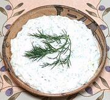

|
Cucumber Yogurt Salad / DipGreece - Tzatziki | ||||
| Makes: Effort: Sched: DoAhead: |
3 cups * 2+ hrs Yes |
A refreshing salad / dip / sauce, similar to those made through, the Balkans, Anatolia, Caucasus, the Levant, Western Asia, and India - variously named. | |||
|
1 1/2 ------- 1 2 1 1/4 1/8 ------- 2 1-1/2 |
# t --- cl T T t t --- c T |
Cucumbers (1) Salt -- Flavorings Garlic Olive Oil Lemon Juice (2) Salt Pepper ------------ Yogurt, strained (3) Dill or Mint |
Make: - (25 min + chilling)
|